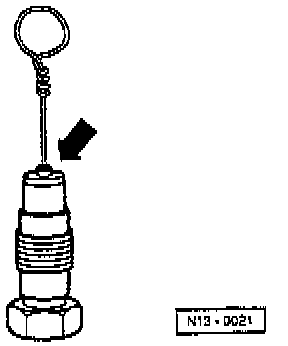

Bleeding Procedure

- Push a piece of wire (0 0.8 mm) through the hole of the pressure piston (arrow) up to ball valve and press pressure piston and housing together onto stop.
NOTE: If the pressure piston moves out again, repeat bleeding procedure.